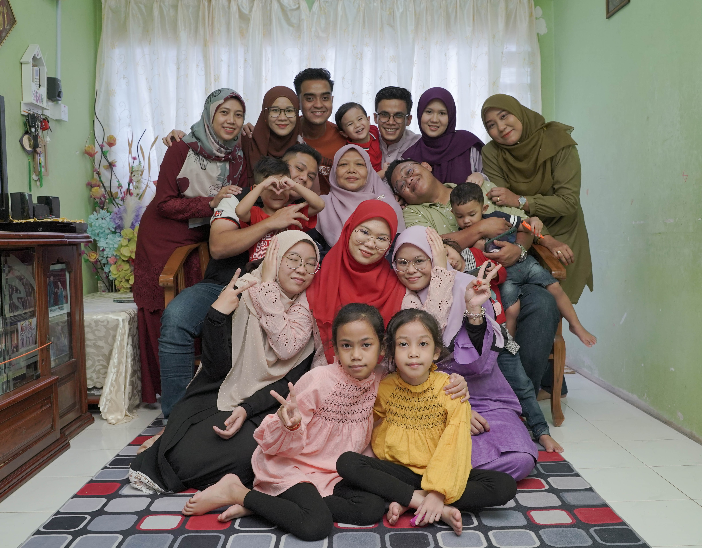

Every day, in my opinion, is ideal for developing a close bond with your family. I think that having solid, committed, loving relationships—the type that entice us to return home each day—is something that we all aspire to a connection that makes you think, "I wish __ were here to share this with me!"

My parents and my 7 siblings, who are divided into 2 boys and 5 girls, make up my extended family of 9.
My mother is the sole person who cares for my siblings and I because my father died away in 2017.
Four of my siblings have already found love, and some of them have young families.
I will tell you about my family. I live with my mother and sister. We live in Pedas, Rembau Negeri Sembilan. My father's name is Reduan. He is from Malacca. My father is fluent in various accents in Malaysia because he works as a motivational lecturer and always travels to different countries to run programs. My father is very strict but at the same time he is very loving and gentle. Although he is gone, we always remember and pray for him. My mother's name is Zainon. My mother is from Kuala Pilah. Since marrying my father, my mother no longer works and remains a successful housewife until now.
My first brother got married with his partner in 2017. They have two children, a girl and a boy. My second brother got married earlier than my first brother in 2012 and now he and his wife have 3 children, 2 girls and a boy. My first sister who is the third child is 31 years old, she just got married in the 2nd month of 2022. She lives with her husband in Malacca. The next sister got married to my older brother in 2017 and now she lives in bangi with her husband and son.
And now, I am left with my two other unmarried sisters at home. Even so, they both already have love, pray that they get married soon XD Overall, I really love my big family. We will often gather on weekends.